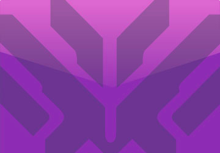

Alguns Heróis
Cumpra sua Função
DANO
Heróis de dano são responsáveis por procurar, atacar e aniquilar inimigos, valendo-se de uma ampla variedade de ferramentas, habilidades e estratégias. Perigosos porém frágeis, esses heróis precisam de apoio para sobreviver.SUPORTE
Heróis de suporte fortalecem seus aliados, pois são capazes de curá-los, protegê-los com escudos, aumentar seu poder de dano e imobilizar os inimigos. Como suporte, você é fundamental para a sobrevivência da sua equipe.Modos de Jogos

JOGO RÁPIDO
Enfrente outros jogadores com o mesmo nível de habilidade

JOGO COMPETITIVO
Teste sua habilidade contra outros jogadores e suba no ranking.
ARCADE
Partidas experimentais com equipes de vários tamanhos, regras sazonais e... recompensas semanais!